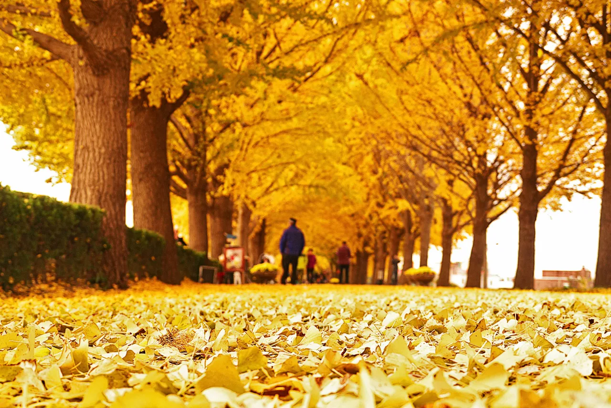
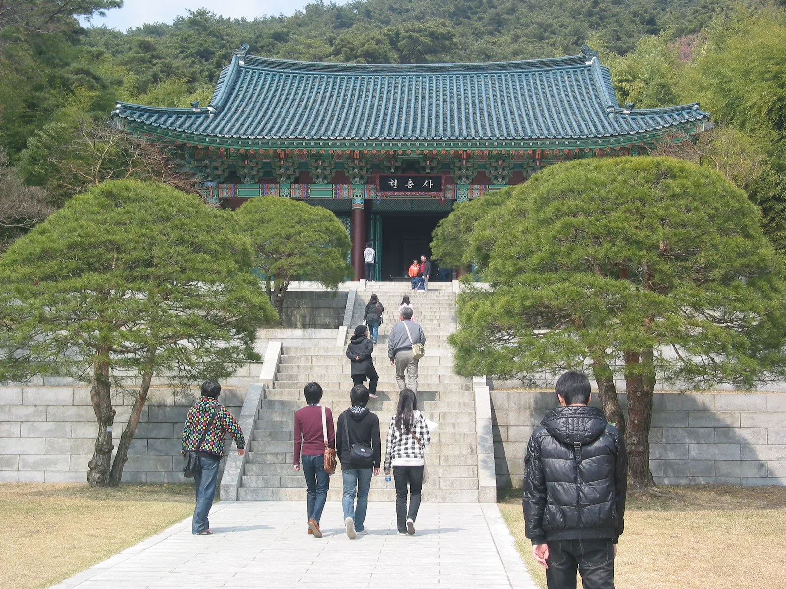

▲ 곡교천 충무교에서 현충사 입구까지 이어지는 아산 은행나무길. 도로 양옆으로 은행나무가 줄지어 서 있어 차에서 내리지 않고도 풍경을 즐길 수 있다 사진=아산시
1. 곡교천 은행나무길, 어디서부터 어디까지인가
아산 곡교천 은행나무길은 충남 아산시 염치읍 은행나무길 293 일원, 곡교천 충무교에서 현충사 입구 사거리까지 약 2.1~2.2km 구간에 조성돼 있다. 1973년 당시 10년생이던 은행나무 350여 그루를 곡교천 제방을 따라 심은 것이 시작으로, 50여 년이 지난 지금은 가지가 도로 위를 덮어 터널처럼 이어지는 가로수길로 자랐다. 2000년 산림청이 주최한 제1회 아름다운 숲 전국대회에서 '아름다운 거리숲' 부문 우수상을 받으며 '전국의 아름다운 10대 가로수길' 중 한 곳으로 꼽혔다. 입장료와 주차비 모두 무료다.

▲ 단풍이 절정에 이르면 도로와 산책로 위로 노란 은행잎이 두껍게 쌓인다 사진=Wikimedia Commons
2. 도로 양옆으로 늘어선 나무, 차에서 그대로 즐긴다
은행나무길의 가장 큰 특징은 산책로가 아니라 차량이 다니는 도로 양옆에 은행나무가 나란히 서 있다는 점이다. 도로 옆으로 보행로도 따로 나 있어 걷거나 자전거를 타는 사람들도 함께 오가지만, 창문 너머로 노란 가로수 터널을 지나가는 것만으로도 드라이브의 목적이 된다. 단풍이 절정에 이르는 시기에는 도로 위와 보행로에 낙엽이 두껍게 쌓여 황금빛 카펫을 이룬다. 다만 이 시기 노면에 낙엽이 쌓이면 미끄러워질 수 있어 서행이 필요하다.

▲ 조명이 켜진 밤의 은행나무길. 낙엽이 쌓인 길과 벤치가 노란 불빛에 물든다 사진=아산시
아산시는 매년 단풍이 절정에 이르는 10월 말에서 11월 초 사이 주말·휴일에 이 구간 일부를 '차 없는 거리'로 운영해왔다. 이 기간에는 차량 통행이 제한되고 보행자가 도로 전체를 걸으며 단풍을 즐길 수 있다. 정확한 운영 일자는 매년 단풍 상황에 맞춰 아산시가 별도로 공지하므로, 방문 전 아산시청 홈페이지나 아산문화재단 공지를 확인하는 것이 좋다.

▲ 차 없는 거리로 운영되는 날에는 도로 전체를 걸으며 낙엽 쌓인 길을 즐길 수 있다 사진=Wikimedia Commons
3. 은행나무길에 처음 켜진 야간 조명, 이달 말까지 시범운영
아산시는 2026년 9월 18일부터 30일까지, 은행나무길 인근 충남경제진흥원 앞 광장 일대 약 150m 구간에 야간 경관 조명을 시범 운영하고 있다. 이 글을 쓰는 9월 24일 기준 시범운영이 진행 중이며, 종료일(9월 30일)까지 약 일주일 남았다. 이 사업은 2024년 충남도 공공디자인 공모사업에 선정돼 추진된 것으로, 같은 기간 현충사 일원에서 열린 '2026 아산 현충사 미디어아트' 개막(9월 18일)에 맞춰 함께 시작됐다. 단순히 길을 밝히는 조명이 아니라 곡교천 수변 경관과 다리, 주변 시설을 연계해 방문객이 머물며 빛과 경관을 함께 감상할 수 있도록 꾸민 것이 특징으로, 아산시는 현충사의 역사·문화 콘텐츠와 은행나무길의 빛 콘텐츠를 연계해 현충사~은행나무길~곡교천으로 이어지는 야간 관광 동선을 구축한다는 계획이다.
아산시는 이번 시범 운영에서 나타난 조명 연출 효과, 자연경관과의 조화, 관람객 이동 편의성과 시설 안전성 등을 점검하고 시민과 관광객 의견을 수렴해 정식 운영 전 콘텐츠와 시설을 보완할 계획이라고 밝혔다. 은행나무길을 '체류형 야간관광지'로 키우겠다는 목표다. 다만 9월 30일 시범운영이 끝나면 조명이 꺼지고, 은행나무길이 노랗게 물드는 단풍 절정 시기(10월 말~11월)에는 아직 정식 야간 조명이 확정되지 않은 상태라는 점에 유의해야 한다. 또한 시범 구간(약 150m)은 2.1km 전 구간이 아니라 경제진흥원 앞 일부 구간에 한정돼 있다.
4. 은행나무길 거리예술제 — 매년 가을 열리는 축제
아산문화재단은 매년 가을 은행나무길 일대에서 거리예술제를 연다. 2025년에는 11월 1일부터 이틀간 2.2km 구간에서 거리 공연과 문화예술 체험 프로그램이 진행됐다. 2026년 축제 일정은 이 글 작성 시점에 아직 공식 발표되지 않았으며, 통상 단풍이 절정에 이르는 10월 말~11월 초 주말에 맞춰 열려온 만큼 비슷한 시기로 예상된다. 정확한 날짜와 프로그램은 아산문화재단 홈페이지나 충남관광포털 축제 안내에서 확인해야 한다.
📍 축제·차 없는 거리 일정 확인처
은행나무길 거리예술제와 차 없는 거리 운영일은 매년 단풍 시기에 맞춰 별도 공지된다. 방문 전 아산문화재단(041-534-2634) 또는 충남관광포털 축제 안내에서 최신 일정을 확인하는 것이 가장 정확하다.
5. 드라이브 코스의 끝, 현충사
은행나무길의 한쪽 끝은 이순신 장군을 기리는 사당 현충사 입구로 이어진다. 곡교천을 따라 노란 가로수길을 지나 도착하면, 소나무 숲 사이로 난 돌계단 위에 현충사 정문이 서 있다. 은행나무길만 왕복해도 좋지만, 시간이 넉넉하면 현충사 경내까지 함께 둘러보는 코스로 이어가는 경우가 많다.

▲ 은행나무길 끝에 자리한 현충사 정문. 이순신 장군을 기리는 사당으로, 은행나무길과 함께 묶어 둘러보는 방문객이 많다 사진=Wikimedia Commons (Joongi Kim, CC BY-SA 2.0)
6. 주차와 접근로
은행나무길 일대에는 무료 주차장이 여러 곳 흩어져 있다. 염치읍 송곡리 쪽에는 제1주차장(백암리 519-2)과 송곡리 공영주차장이, 현충사에 가까운 쪽에는 제2주차장(백암리 258)이 있다. 충남경제진흥원 주차장(은행나무길 223)은 평일에는 업무용으로 쓰이다가 주말·휴일에 방문객에게 개방되며, 이 밖에 곡교천 야영장 임시주차장도 단풍철 보조 주차 공간으로 활용된다. 다만 단풍철 주말·휴일에는 오전 일찍부터 만차가 되는 경우가 많아, 이른 시간에 도착하거나 외곽 주차장부터 확인하는 편이 낫다. 수도권과 대전 방면에서는 경부고속도로나 국도를 통해 아산·온양 방면으로 진입한 뒤 지방도로 염치읍 방향으로 이동하면 닿을 수 있다.
✅ 출발 전 확인할 것
· 단풍 절정 시기는 연도별 기상에 따라 달라지므로 방문 직전 최신 정보 확인
· 차 없는 거리 운영일에는 도로 진입이 제한될 수 있음
· 야간 경관 조명 시범운영은 9월 30일까지만 진행되며, 단풍철 정식 운영 여부는 아직 미정
· 은행나무길 거리예술제 등 축제 일정은 아산문화재단 공지로 최종 확인